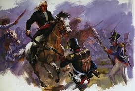

LA MARCHA HACIA EL BAJIO Y VALLADOLIDTras estallar la revuelta el 16 de septiembre de 1810 en Dolores, Miguel Hidalgo y sus compañeros comprendieron de inmediato que no podían detenerse, pues la supervivencia de la causa dependía de avanzar rápidamente para mantener el impulso y ganar adeptos. La ruta elegida fue hacia la región del Bajío, considerada estratégica no solo por su riqueza económica y agrícola, sino también por la alta densidad de población que habitaba en esos territorios. Al salir de la parroquia de Dolores, el grupo contaba apenas con unos pocos cientos de hombres, pero conforme avanzaron por los caminos reales, la respuesta del pueblo fue inmediata y masiva. Al pasar por lugares como San Miguel el Grande y Celaya, miles de personas salieron a sumarse a las filas, motivadas por el deseo de libertad y el cansancio acumulado por años de injusticias sociales y tributos excesivos. El crecimiento del ejército fue verdaderamente exponencial; campesinos, indígenas, artesanos y mineros se unieron armados con lo que tenían a la mano, desde machetes y lanzas hasta hondas, picos, palos y herramientas de trabajo. Para cuando la marcha cruzó las localidades de Salamanca e Irapuato, la masa humana superaba ya los 80,000 integrantes, formando una fuerza descomunal que, aunque carecía de disciplina militar formal, resultaba visualmente imponente y aterradora para las autoridades españolas. El primer gran desafío militar y político se presentó al llegar a la ciudad de Guanajuato, una de las plazas más importantes y ricas de la Nueva España debido a sus minas. Allí, el intendente Juan Antonio de Riaño decidió no rendirse y optó por la resistencia armada, confiando en que podría contener el avance insurgente hasta recibir refuerzos desde la capital del virreinato. |
 |
|
|---|---|---|
Consciente de que no podía defender toda la extensión de la ciudad, Riaño ordenó concentrar a los soldados, el tesoro real, las armas y a las familias españolas más importantes dentro de la Alhóndiga de Granaditas. Este edificio, robusto y sólido, había sido construido originalmente como granero y almacén, pero fue acondicionado rápidamente para funcionar como una verdadera fortaleza inexpugnable. Hidalgo intentó evitar el derramamiento de sangre enviando un ultimátum solicitando la rendición pacífica, prometiendo respetar la vida y los bienes de quienes se encontraban dentro, pero Riaño rechazó la propuesta firmemente. Ante la negativa, el ataque comenzó la mañana del 28 de septiembre y la batalla que se desató fue sumamente violenta y sangrienta. Poco después de iniciado el combate, el intendente Riaño fue alcanzado directamente por una bala de cañón y murió al instante, lo que provocó pánico, confusión y desorganización total entre las filas de los defensores realistas. A pesar de la muerte de su líder, las murallas y la puerta principal seguían resistiendo el embate de la multitud, manteniéndose cerradas e infranqueables.
Fue en ese momento crítico cuando surgió la figura legendaria de Juan José de los Reyes Martínez, conocido históricamente como "El Pípila", un valiente minero que se ofreció para realizar una misión suicida. Se colocó una pesada losa de piedra en la espalda para protegerse de la lluvia de balas y flechas, tomó una antorcha y brea, y avanzó bajo fuego enemigo hasta llegar a la entrada. Una vez en posición, logró prender fuego a la puerta principal de madera, logrando finalmente abrir una brecha por donde irrumpió la muchedumbre insurgente. La toma de la Alhóndiga fue una victoria total y decisiva, aunque estuvo marcada por saqueos, desórdenes y actos de violencia que Hidalgo intentó controlar con dificultad, revelando los enormes retos de mandar una fuerza tan heterogénea y airada. Tras permanecer varios días en Guanajuato para restablecer el orden, recaudar fondos y obtener el armamento necesario, la marcha continuó su camino hacia el occidente del país. Pasaron por localidades como Maravatío y llegaron finalmente a Acámbaro, un lugar fundamental donde se intentó dar estructura y profesionalismo al ejército insurgente por primera vez.
En Acámbaro se crearon cuerpos militares organizados, se nombraron oficiales con rangos definidos, se acuñó moneda propia para poder pagar a las tropas y se adoptó oficialmente como estandarte la bandera con la imagen de la Virgen de Guadalupe. Fue allí también donde se confirmó solemnemente a Miguel Hidalgo con el título de Capitán General del Ejército de América. Continuando con su avance, las fuerzas llegaron el 17 de octubre de 1810 a la ciudad de Valladolid, hoy conocida como Morelia, capital de la provincia de Michoacán. A diferencia de lo ocurrido en Guanajuato, aquí no hubo combate alguno; las autoridades realistas y el comandante militar, al ver la inmensidad del ejército que se aproximaba, sintieron tal pánico que huyeron durante la noche abandonando la ciudad desprotegida. La entrada fue por tanto pacífica y triunfal, y la estancia en esta ciudad resultó ser trascendental porque transformó la simple rebelión en un verdadero proyecto político y social. Hidalgo aprovechó esos días para emitir decretos históricos que definieron el carácter de la revolución, ordenando la abolición total y definitiva de la esclavitud y mandando romper las cadenas de quienes se encontraban sometidos. Además, decretó la supresión de los tributos que los indígenas estaban obligados a pagar desde la época de la Conquista, prohibió la tortura judicial y estableció que debían devolverse las tierras a los pueblos originarios que habían sido despojados. Sin embargo, al mismo tiempo, las tensiones internas entre los líderes crecieron de manera preocupante. Mientras Ignacio Allende y los militares profesionales sugerían fortificarse o ir hacia el norte para esperar apoyos y organizarse mejor, Hidalgo confiaba plenamente en la fuerza del pueblo y en la rapidez del avance. A pesar de las advertencias y discrepancias, tomó la decisión final de marchar directamente sobre la Ciudad de México con el objetivo de derrocar al Virrey y consumar la independencia de una vez por todas.